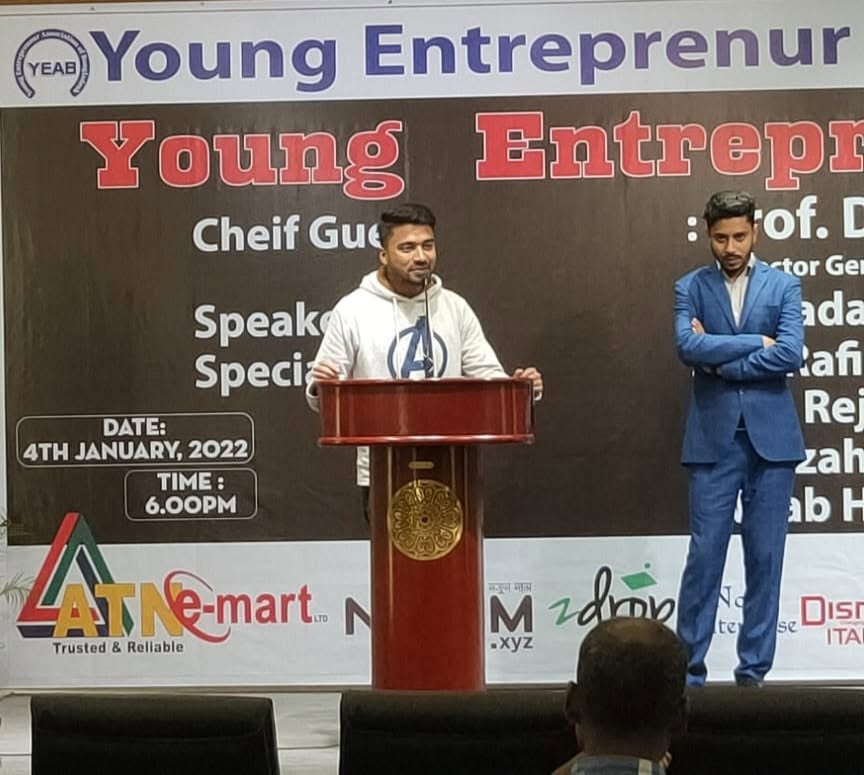
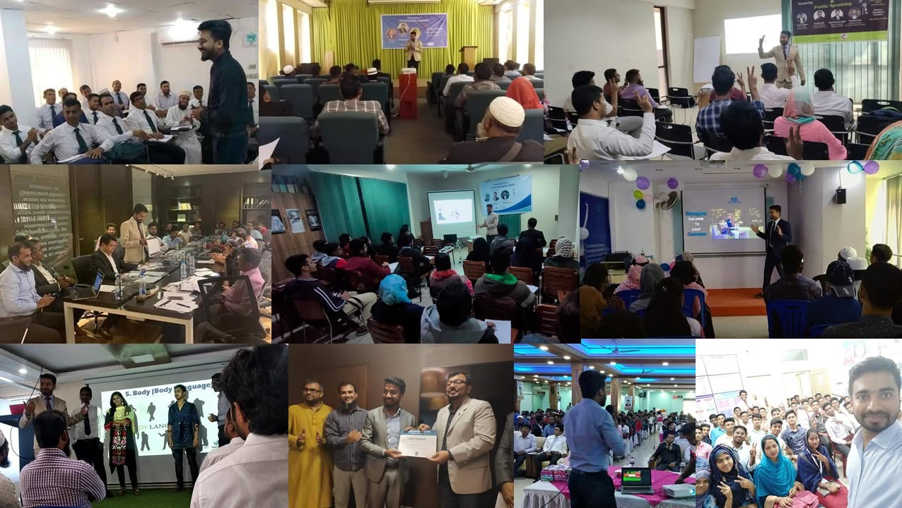

Practical conversations
that people can use.
I speak to professionals, students, leaders and youth audiences about career growth, personal branding, professional visibility and leadership positioning.
Make it clear. Make it relevant. Make it practical.
The idea should be easy to understand, relevant to the audience and practical enough to use after the session ends.
Personal Branding for Professionals
Build credibility, professional identity and visibility without turning personal branding into self-promotion.
Career Growth Beyond Hard Work
Why effort alone does not always create career growth — and what professionals need in addition to performance.
From Invisible to Valuable
How positioning, communication and visibility influence professional perception.
Manager to C-Suite
The mindset, positioning, visibility and development required for senior leadership progression.
Build Your Professional Identity
How expertise, communication, appearance, digital presence and reputation can work together.
Career Readiness in the Age of AI
Skills, adaptability, career positioning and future relevance for professionals and students.
Personal Branding for Leaders
Turn experience into credible professional authority for founders, executives and senior professionals.
- Speaker — Youth Lead Evaluation Summit
- Honorable Judge — Youth Expressions National Youth Entrepreneur Conference & Mr. Youth Entrepreneur Award 2025
- Speaker — Creative Challenge
- Speaker — Youth Conference
- Speaker at additional career, youth and professional-development programs.
Career conversations that connect with the room.
Career clarity, personal branding and visibility presented with a practical, human approach.
Speaking, facilitating and connecting with the room.
A selection of real moments from sessions, conferences, workshops and professional-development conversations.


